上周 Anthropic 发布了 Dynamic Workflows，24 小时不到就被人公开指控"抄袭"了。
一个叫 Sisyphus Labs 的团队直接在推特上@了 Anthropic，说 Claude Code 新推的 ultracode 模式，跟他们做的 OMO 工具里的 ultrawork 和 atlas 功能几乎一模一样。
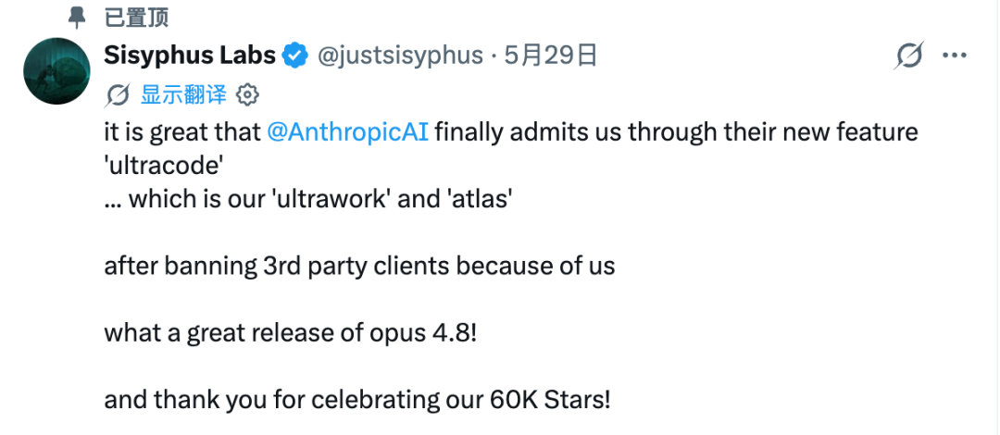
抄没抄的，我不评价。但这件事背后有个更值得想的问题。
让 AI 自己写编排脚本这个能力，已经成了 Coding Agent 赛道的兵家必争之地。
OpenAI 的 Codex 也在用 /goal 模式干类似的事，第三方开源工具像 OMO 也早就跑通了类似的路线。路径各不相同，但所有人都要解决同一个问题：AI 要能自己拆任务、调度一支 Agent 舰队去干大活。
Dynamic Workflows 就是 Anthropic 的做法。你告诉它"帮我做什么"，它自己写一段 JavaScript 编排脚本，派几十上百个 Agent 并行干活，干完把结果交回来。
如果你用过 n8n 或者 Dify 搭工作流，对把任务拆成多个步骤、每步塞一个 AI 节点应该不陌生。Dynamic Workflows 干的事跟这个一样，区别是编排者不是你，是 AI 自己。
它到底是什么
很多人看到 Workflow 这个词，以为是某种跑在 Anthropic 服务端的编排引擎。Dynamic Workflows 就是一段 JavaScript 脚本。
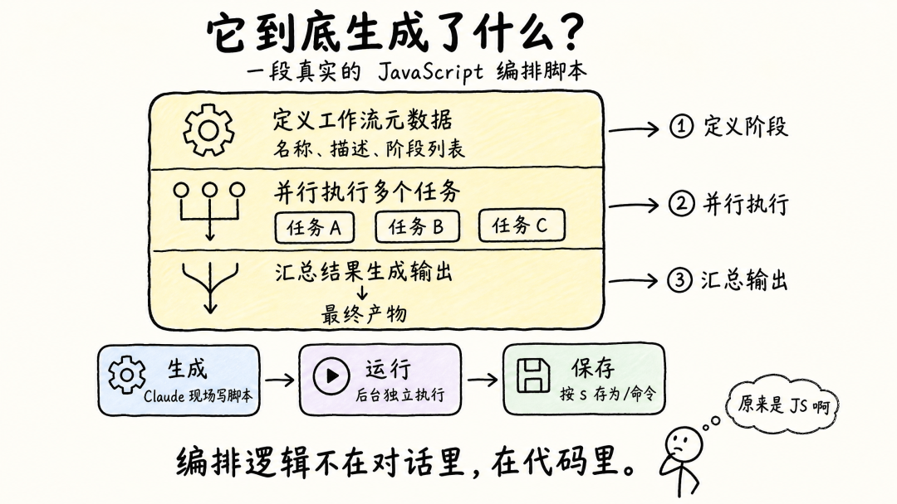
Claude Code 根据你的任务，临场现写这段脚本，然后在本机后台跑。脚本里每碰到一个 agent() 调用，就派生一个 subagent 去读文件、改代码、跑命令。脚本只管调度，不碰文件系统，也不碰 shell。
如果你是 n8n 用户，可以这样理解：n8n 是静态路由，你得提前画好死流程，每次执行走的路线都一样；Dynamic Workflows 是动态路由，AI 根据前一个 Agent 返回的结果，现场决定下一步是该加 5 个 agent 去修 bug 还是直接收工。
这个编排脚本是 Claude 看到你的任务后临时用 JavaScript 写出来的，不是预先配好的模板。每次任务不同，脚本就不同。同一个任务换个说法，脚本的结构也可能不一样。
而且这段脚本不在主对话的 session 里执行，Claude 把它丢到后台独立跑，主 Agent 全程在睡觉，只在最后被叫醒去读结果。所以触发一个 Workflow 之后，主对话还可以继续干别的事。
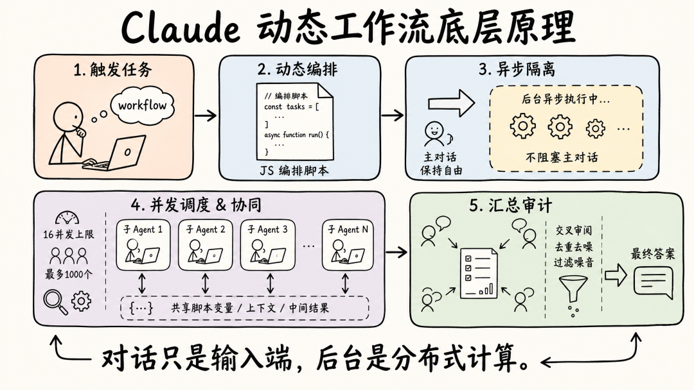
跟 Subagent、Skill 什么区别
三者的区别是协作规模不同。核心问题只有一个：谁握着计划？
Subagent 就像你派一个小弟去跑腿，"帮我去查一下这个文件里有什么"，查完结果直接回到你的对话上下文里。Claude 逐轮判断下一步，简单直接，但所有中间结果都会堆在你的上下文窗口。
Skill 是一份预写好的 Markdown 指令，Claude 照着做。还是 Claude 决定下一步，按 prompt 走。可以理解成"标准作业流程"，SOP。中间结果同样落在 Claude 的上下文窗口里。
Dynamic Workflows 把编排逻辑从对话里剥出来，写成代码。脚本自己决定下一步。循环、分支、中间结果全在脚本变量里流转，Claude 的上下文只保留最终答案。
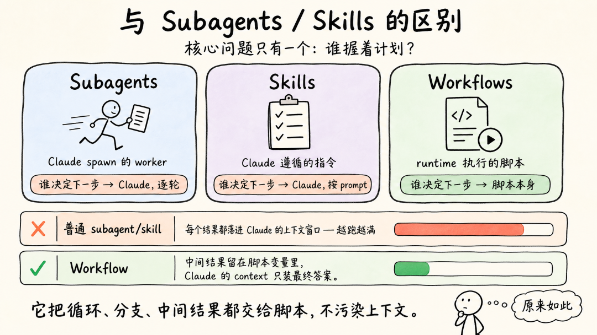
这个差异有多大？看上下文占用就知道了。
用 subagent 或 skill 派 10 个小弟去干活，10 份结果全部作为 tool result 回到你的对话里，上下文越跑越臃肿，到后面 Claude 的注意力都被过程信息稀释了。Workflow 的 10 份中间结果在脚本变量里流转，最后只有一份汇总报告回到 Claude 的上下文。
需要"跑腿"用 subagent，需要"按手册操作"用 skill，需要"流水线作业"用 Workflow。
怎么用：3 步跑起来你的第一个 Workflow
准备工作：确保功能已开启
打开 Claude Code，输入 /config 命令，检查 Dynamic workflows 那一行是不是已经开启。
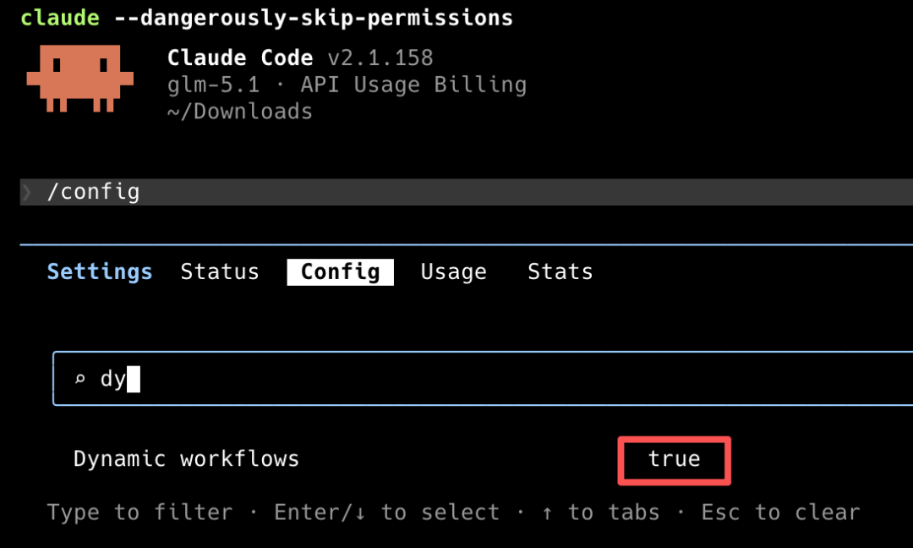
版本要求 Claude Code v2.1.154 或更高。如果你的 /config 里没这一行，先更新版本。
触发方式一：在 prompt 里说"workflow"
最简单的方式，就是在 prompt 里包含 workflow 这个关键词。Claude Code 会把它高亮成彩色，提示你可能触发一个工作流。
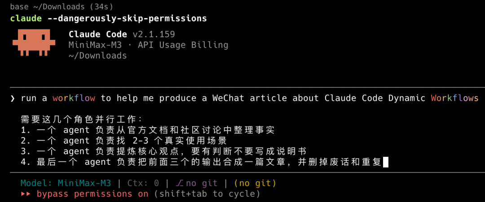
回车之后，Claude 会先写一段 Workflow 脚本，然后在后台开始运行。
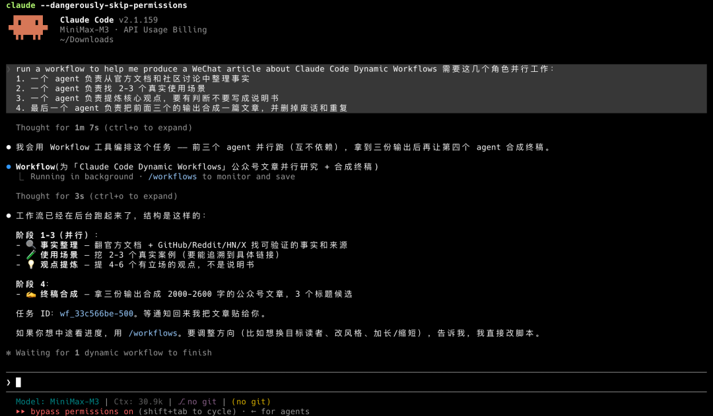
触发方式二：开启 ultracode 模式
不想每次手动判断"这个任务值不值得起 Workflow"，可以把这个决定权交给 Claude：
/effort ultracode这条命令做两件事：把推理努力拉到最高档（xhigh），同时允许 Claude 自动判断什么时候该用 Workflow。
开了 ultracode 之后，一个复杂的请求可能被拆成连续好几个 Workflow，比如先跑一个理解代码，再跑一个做修改，最后跑一个验证。
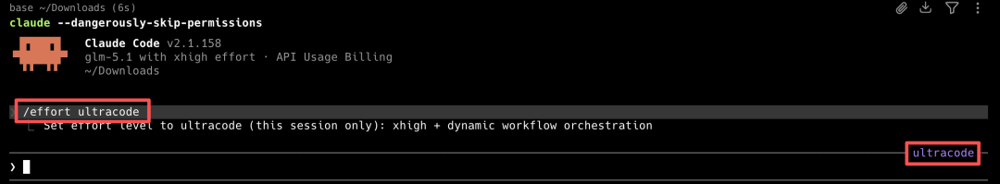
ultracode 模式下每个请求消耗的 token 明显更高，别在简单任务上开着忘关了。想退回日常模式，/effort high 就行。
触发方式三：使用内置的 /deep-research
Anthropic 内置了一个现成的 Workflow——/deep-research，后面跟一个问题就行：
/deep-research What changed in the Node.js permission model between v20 and v22?它从多个角度发起搜索，抓取并交叉核对来源，对每一条结论投票表决，最后产出一份带出处的报告。没通过交叉验证的结论会被直接剔除。
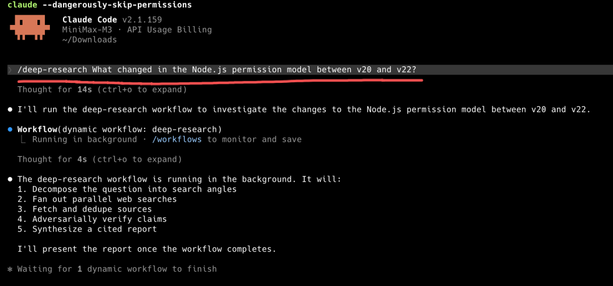
想感受 Workflow 是什么体验，跑一个 /deep-research最快。
运行中可以干什么
Workflow 启动之后，可以随时查看运行状态。
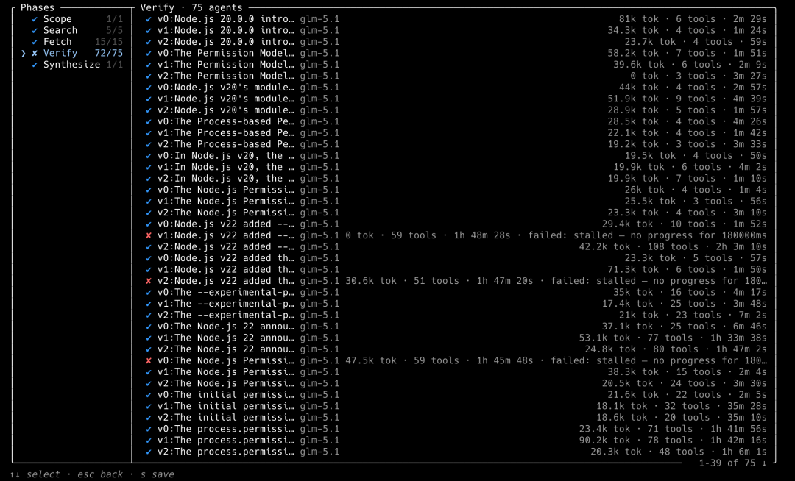
输入 /workflow 命令，就能看到当前 Workflow 的进度。用方向键切换到不同的阶段，看每个阶段跑到哪了。
几个关键操作：
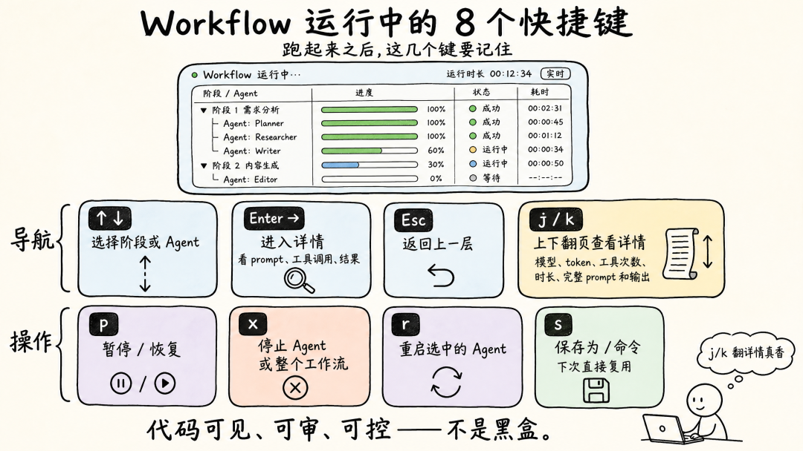
查看详情，选中某个 agent 后按 Enter 或 → 进入详情，能看到它调了什么模型、花了多少 token、用了几次工具、跑了多久，还能看完整的 prompt 和输出。内容太长的话用 j/k 上下翻页。
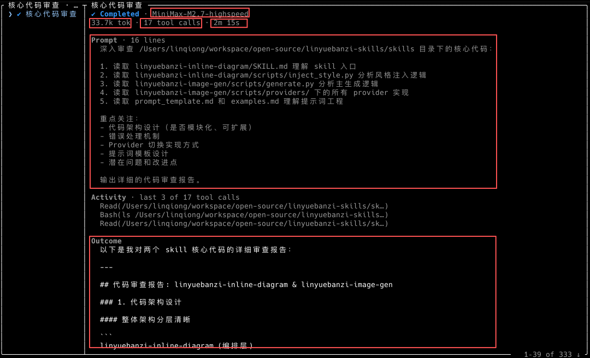
暂停运行，按键盘上的 p 键可以随时暂停，再按 p 恢复继续跑，已经完成的工作不会白费。
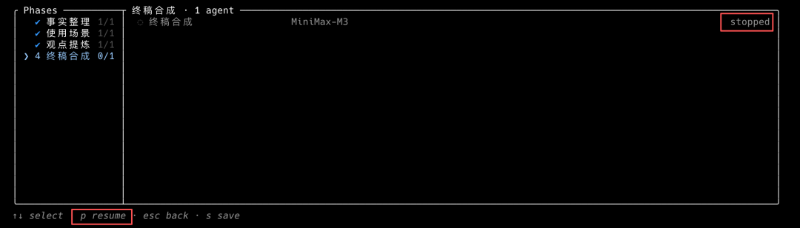
保存 Workflow，跑得不错的话按 s 键就能保存下来。
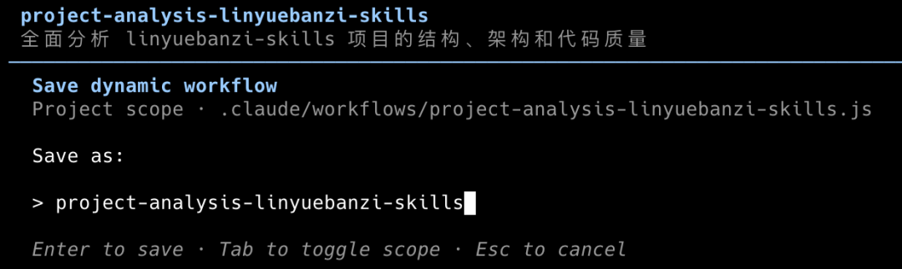
保存后它会变成一个 /命令名 的斜杠命令，下次直接调用，不用 Claude 重新写脚本了。
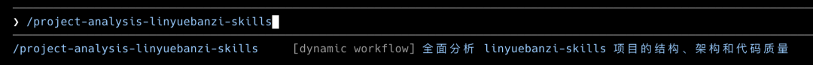
保存的位置有两种选择，按 Tab 切换：
"保存"这个操作看着不起眼，但它可能是 Dynamic Workflows 最长期的价值。
保存下来的文件里，每个 agent 的提示词都完整保留着。你可以把这个文件分享给别人，也可以在其他项目里直接复用。下次遇到类似任务，直接调用保存好的命令就行，不用 Claude 重新写脚本。
被沉淀下来的不是一个 n8n 工作流，而是一整套 Agent 协作的编排逻辑。
硬约束
Workflow 不是万能的，有几个硬约束先记下来：
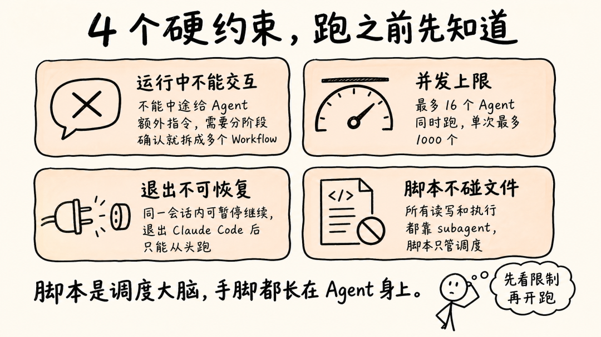
核心价值：抹平了编排的技术门槛
在官方推出这个功能之前，想让多个 Agent 并行干活、结果汇总、错误重试，你得自己写编排代码，处理并发控制、限流重试、中间状态管理、结果聚合，全是脏活。
Dynamic Workflows 把编排这层的技术门槛直接抹平了。
以前是人写编排代码、手搓各种脏活，AI 只管卖力气。
现在是 AI 自己根据任务现场生成编排逻辑，跑在官方提供的运行时里。
门槛从"会写编排代码"降到了"会定义目标"。
什么时候该用 Workflow
不是每个任务都需要起 Workflow。它是用大量并行 agent 换效率，而并行 agent 是实打实烧 token 的。
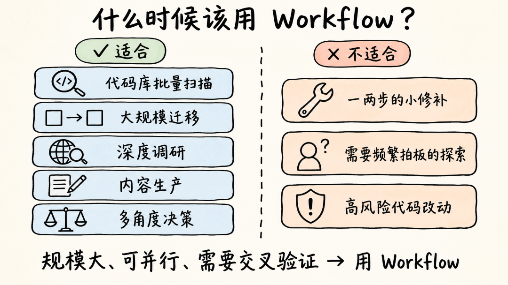
代码库范围的批量扫描，全仓库 bug 排查、安全审计、性能优化审计。特点是多视角并行扫加独立验证，一个 agent 看一个维度。
run a workflow to scan this project
分成架构、安全、性能、测试四个维度并行检查，每个维度独立出结论。
只报问题，不要改任何文件。
最后合成一份按优先级排序的清单，标注哪些是马上要修的、哪些可以后面再说。"不要改任何文件"这句最好加上，不然 AI 很容易边查边改，改到一半上下文乱了。
大规模迁移，框架替换、API 弃用迁移、跨语言移植。Bun 的作者就用 Dynamic Workflows 把整个运行时从 Zig 移植到了 Rust，11 天、75 万行代码。
研究类任务，研究一个新工具、一篇论文、一个开源项目。这类直接用 /deep-research 就行，会自动多路搜索、交叉验证、剔除不靠谱的结论。
内容生产类任务，公众号文章、视频脚本、课程大纲。相当于搭了一个小编辑部，不同 agent 各管一摊：有人查资料，有人提观点，有人找案例，有人专门挑废话。
run a workflow to help me produce a WeChat article about Claude Code Dynamic Workflows
需要这几个角色并行工作：
1. 一个 agent 负责从官方文档和社区讨论中整理事实
2. 一个 agent 负责找 2-3 个真实使用场景
3. 一个 agent 负责提炼核心观点，要有判断不要写成说明书
4. 最后一个 agent 负责把前面三个的输出合成一篇文章，并删掉废话和重复需要多角度推敲的决策，选技术栈、评估方案、做产品判断。这类任务最怕 AI 和稀泥说"各有优劣"，Workflow 能强制把不同立场拆给不同 agent，最后必须给一个结论。
run a workflow to compare n8n vs Dify for my automation course
一个 agent 只站 n8n 的角度说优势，一个只站 Dify 的角度说优势，一个专门看学员上手难度，一个只算成本。
四份结论互相不能看到对方的输出。
最后由一个汇总 agent 综合判断，必须给一个主推荐，不要说"看情况"。不适合用 Workflow 的场景：一两步就能搞定的小修补、需要你中途频繁拍板的探索性工作、碰安全和支付这类高风险代码的改动。
Workflow 是实打实烧 token 的。几十上百个 subagent 同时跑，账单自然往上走。建议从小任务开始摸清楚大概花多少，大规模运行前用 /model 确认模型，不是每一步都得用最贵的脑子。Workflow 随时可以叫停，已经完成的工作不会白费。
聊聊我的感受
跑了几次 Dynamic Workflows 之后，这东西确实解决了一个真实的问题。
以前想让多个 Agent 协作干活，要么自己写 Harness 搞并发控制，要么用 subagent 一个个派，中间结果全堆在上下文里越来越臃肿。现在说一句话，Claude 自己把编排脚本写好，后台跑完把结果交回来，中间过程不占上下文。
Agent 做不好的事情，交给代码。它会忘上下文，就把控制流写进脚本；它自己验自己不靠谱，就让多个 Agent 互相交叉验证。Dynamic Workflows 做的就是这个分工。
编排这件事，正在从"人的技术活"慢慢变成"AI 的基础能力"。以前搭一套多 Agent 协作的流程，门槛不低；现在说清楚想干什么就行，AI 自己搞定编排。
不只 Anthropic 在做，OpenAI 的 Codex 也在走类似的路，社区里手搓编排框架的人也越来越多。具体形态会怎么演化，现在说还太早，但让 AI 自己编排工作流这个方向，大概率不会错。
如果觉得不错，随手点个「赞」和「在看」，转发给需要的朋友吧～ 第一时间收到推送，记得给我个星标